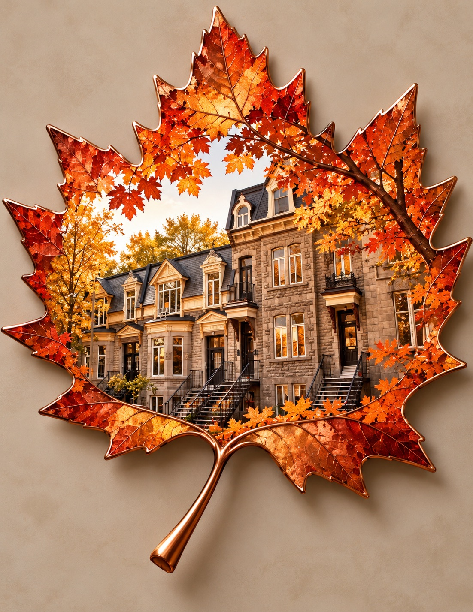

🍂 La corvée d'automne
Le comité des Espaces verts et blancs (EVB) vous informe que la prochaine corvée d'automne aura lieu le samedi 7 novembre 2026, dès 10 h.
Cette journée sera consacrée à la préparation de nos espaces communs pour l'arrivée de l'hiver.
Les principales tâches prévues sont :
- Le ramassage des feuilles mortes
- Le nettoyage des espaces extérieurs
- Le nettoyage des crépines sur les toits
- L'installation des tapis d'hiver
- Le rangement et l'entretien des espaces communs
Nous tenons à rappeler que la participation aux corvées est obligatoire pour les membres de la coopérative. Il s'agit d'une responsabilité collective essentielle au bon entretien de notre milieu de vie et au partage équitable des tâches.
Nous comptons donc sur la présence et la collaboration de toutes et de tous pour assurer le bon déroulement de cette journée.
Merci de votre engagement et de votre participation.
Le comité des Espaces verts et blancs (EVB)
